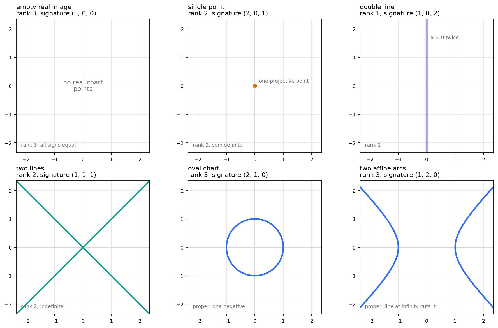
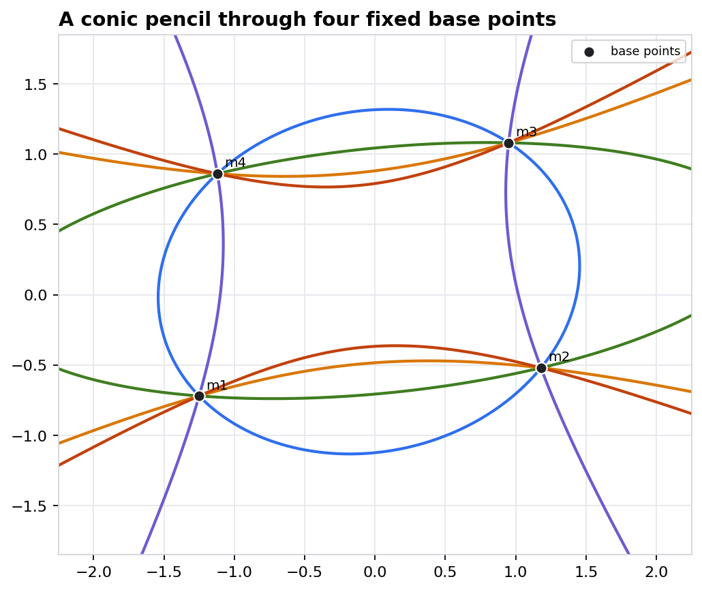
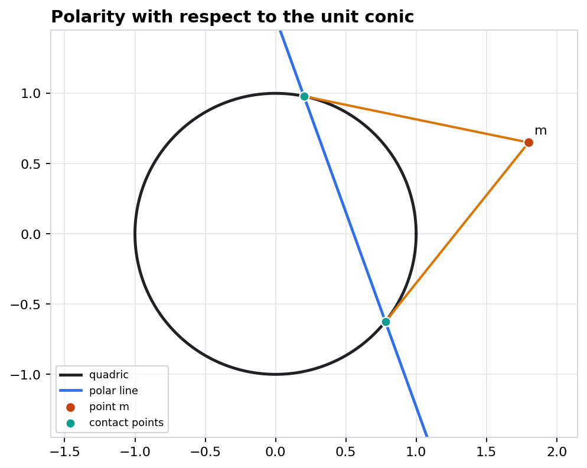
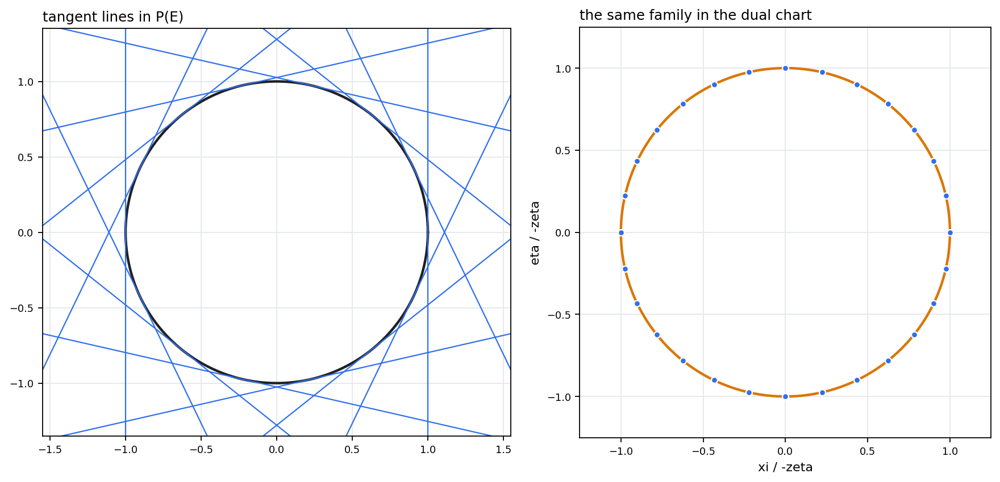
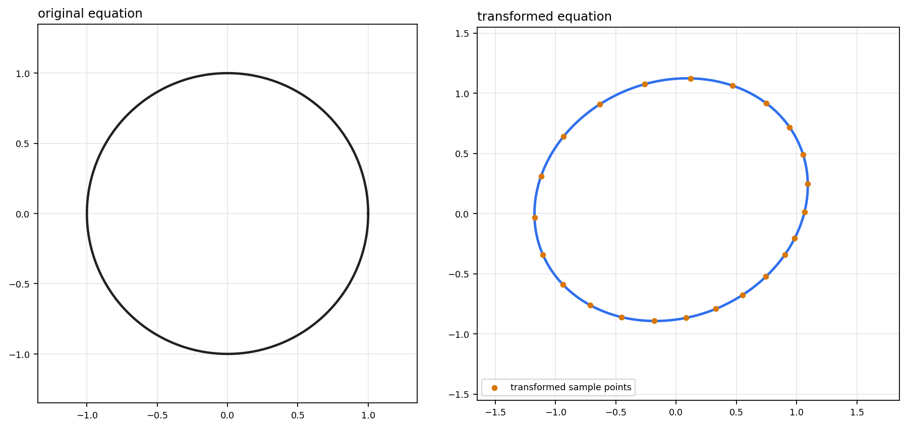

Projective Quadrics: Equations, Pencils, Polarity
A quadric is a homogeneous matrix equation read modulo scale; its visible chart is only one inspection window.
The Equation Must Survive Two Choices
Representatives change; the zero set in projective space does not.
A quadric in \(\mathbb P(E)\) is the projective zero set of a nonzero homogeneous quadratic form, encoded by a symmetric matrix class \([A]\).
Two Invariance Tests
- Point scaling: \(q_A(\lambda x)=\lambda^2 q_A(x)\).
- Equation scaling: \(q_{cA}(x)=c q_A(x)\).
- The zero condition is well-defined modulo both scalars.
Rank And Signature Explain The Chart Gallery
The same projective habit reads empty charts, degenerate conics, ovals, and arcs as matrix phenomena.

Notebook artifact: affine chart \(z=1\) for six representative symmetric matrices.
Rank
Rank detects whether the quadratic equation is proper or degenerate. Low rank may collapse the visible object to a point, a repeated line, or a pair of lines.
Signature
Over the real numbers, signs decide whether the form has isotropic directions. Equal signs give no real points; mixed signs produce real projective points.
Chart Warning
An oval and two affine arcs can be different chart readings of projective data. Points at infinity may decide what the eye misses.
A Pencil Is A Line In The Space Of Quadrics
Base points are common zeros; discriminant points are singular equations.

Every displayed member passes through the four marked base points.
Two Projective Spaces
- Original space: points \([x]\) satisfying all members.
- Equation space: classes \([A_0+tA_1]\) along a projective line.
- Discriminant: roots of \(\det(A_0+tA_1)\).
| root \(t\) | determinant check |
|---|---|
| -1.5021777165 | \(-7.04\cdot10^{-16}\) |
| approximately 0 | \(1.02\cdot10^{-16}\) |
Base locus fixed; singular members detected by the determinant.
A Neutral Quadric Carries Two Rulings
The affine equation \(z=xy\) is a chart of \(xy-zw=0\).
In the chart \(w=1\), the projective quadric \(xy-zw=0\) becomes \(z=xy\). Fixing \(x\) or fixing \(y\) gives a straight line contained in the surface.
Inspection Target
The surface bends globally, but every blue and teal trace is a line. This is topology and incidence, not just curvature in a drawing.
Polarity Turns Points Into Hyperplanes
For invertible \(A\), the bilinear form supplies a point-hyperplane correspondence.

The polar line of an external point joins the two tangent contact points.
On The Quadric
If \(x^T A x=0\), then \(\Pi_x\) is the tangent hyperplane at \([x]\).
Outside A Real Conic
The same linear equation gives the chord of contact for the two real tangents from the external point.
Inside The Conic
The polar line still exists algebraically, even when the contact points are no longer real in the chosen chart.
The Tangents Themselves Form A Quadric
A hyperplane coefficient vector is a point of the dual projective space.

Left: tangent envelope in \(\mathbb P(E)\). Right: the same family as points in the dual chart.
For a proper quadric with matrix \(A\), a hyperplane \(\ell^T x=0\) is tangent exactly when its dual coordinates satisfy
Unit Conic Sample
For \(x^2+y^2-z^2=0\), the tangent at angle \(\theta\) has coefficients \((\cos\theta,\sin\theta,-1)\).
Teaching Read
The blue lines and orange locus are not separate phenomena; they are one tangent family in two projective spaces.
Move Points Forward, Move Equations Backward
The transformed equation is chosen so truth of \(x^T A x=0\) is preserved.

Transformed sample points lie on the transformed conic after the coordinate change.
Why The Inverse Transpose?
- Substitute \(x=H^{-1}y\) into \(x^T A x=0\).
- The new matrix must satisfy \(y^T A' y=0\).
- Hyperplanes transform by the dual rule.
Group Of A Quadric
The projective symmetries of a proper quadric are the classes of \(H\) with \(H^T A H\) proportional to \(A\).
What The Matrix Tells You Before You Draw
Chart pictures become safer once the invariant ledger is named.
| Question | Matrix test | Geometric reading | Slide evidence |
|---|---|---|---|
| Is the quadric proper? | \(\det A\neq 0\) | No radical; polarity is an isomorphism. | Polarity and tangential dual slides. |
| Is the real locus nonempty? | signature has both signs | There are real isotropic directions. | Rank and signature gallery. |
| Where do singular members occur? | \(\det(A_0+tA_1)=0\) | The pencil meets the discriminant. | Two determinant roots in the pencil. |
| Can the quadric contain lines? | neutral form in dimension four | Two systems of projective generators can appear. | Ruled model \(xy-zw=0\). |
| Will a projective change preserve incidence? | \(A'=H^{-T}AH^{-1}\) | Points and equations transform by dual rules. | Transformed conic certificate. |
Matrix
Rank, determinant, inverse, and signature are the first diagnostic tools.
Incidence
Zero conditions, tangency, and base loci must be invariant under representatives.
Chart
Draw only after choosing what the chart is allowed to forget or reveal.
Design The Quadric Before Choosing The Chart
Constraints become equations in the entries of \(A\).
Start with \(A=A^T\). A point condition \([x]\in Q_A\) is the linear equation \(x^T A x=0\) in the entries of \(A\).
Tangency Or Polarity
Use \(Ax\) as the coefficient vector of the polar hyperplane. Tangency asks this hyperplane to match the required contact data.
If A Pencil Remains
Study \(\det(A_0+tA_1)\) before selecting a member. A beautiful chart picture may hide a degenerate limit.
Each Picture Has A Numerical Witness
The notebook closes the gap between projective statements and affine drawings.
| Check | Residual |
|---|---|
| scale invariance | 3.55e-15 |
| pencil base residual | 9.99e-16 |
| pencil root determinant | 7.04e-16 |
| polarity contacts on conic | 0.0 |
| polarity contacts on polar | 0.0 |
| tangential dual equation | 2.22e-16 |
| projective action | 1.33e-15 |
| ruled quadric containment | 0.0 |
What Counts As Evidence?
A visualization earns its place by carrying an invariant check: a zero residual, a determinant root, a tangent equation, or an incidence relation.
Artifact Ledger
The chapter records nine artifacts: five static figures, two HTML plots, one CSV table, and one JSON check file.
Lecture Use
When a chart picture changes under a projective transformation, the residuals tell students which projective facts survived unchanged.
Recap: Choose The Right Ledger
Given a new matrix class \([A]\), decide what survives before trusting the picture.
A conic in \(P^2\) has matrix \(A=\mathrm{diag}(1,-1,0)\). Classify its chart \(z=1\), say whether polarity is an isomorphism, and predict what a generic pencil through it should check first.
Expected Reading
Rank two and mixed signs give a degenerate pair of real lines. Because \(A\) is singular, polarity is not an isomorphism. A pencil containing it should inspect determinant roots.